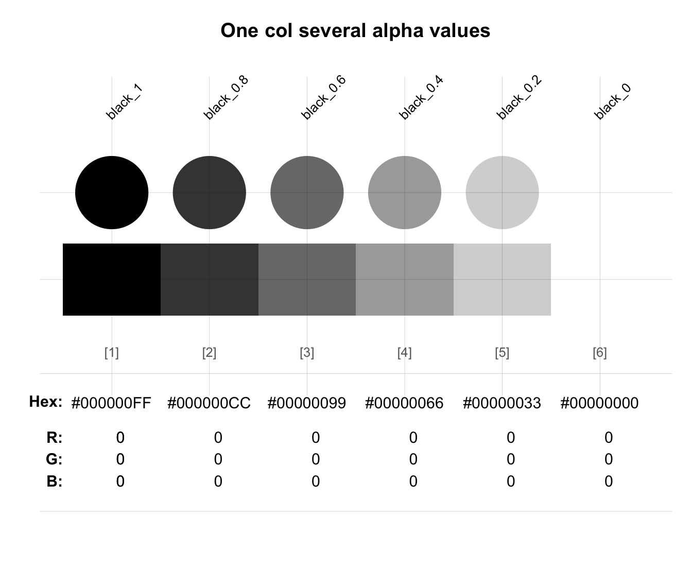
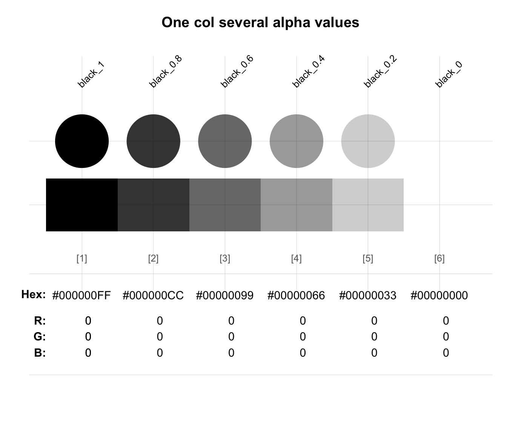
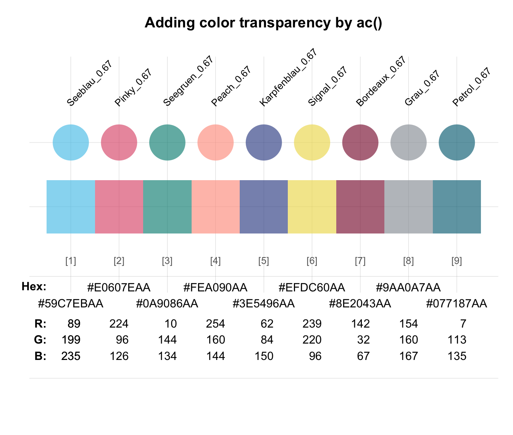
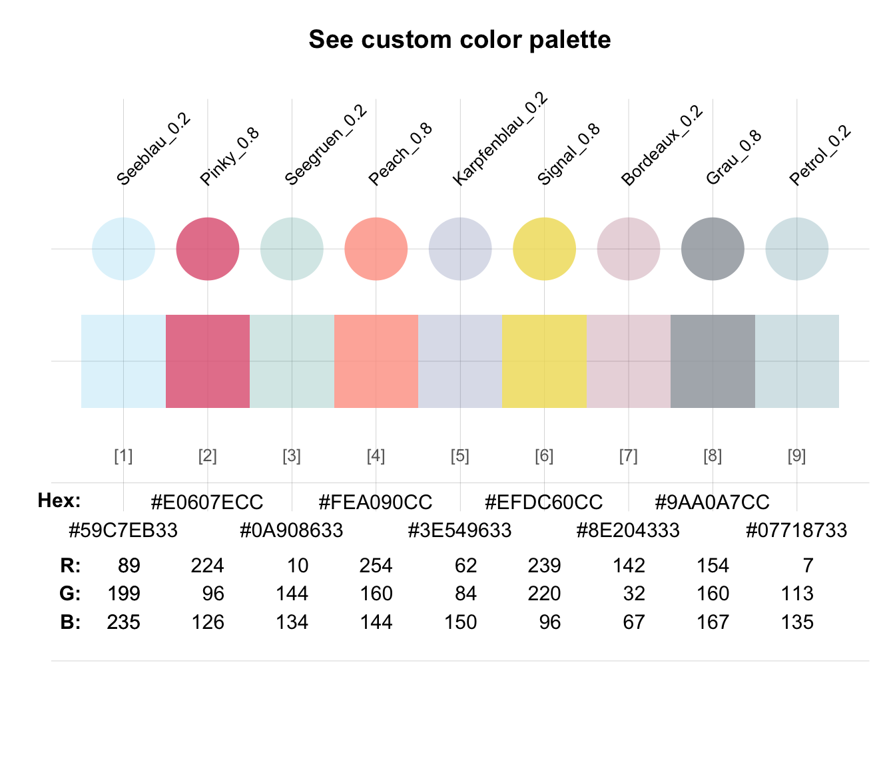
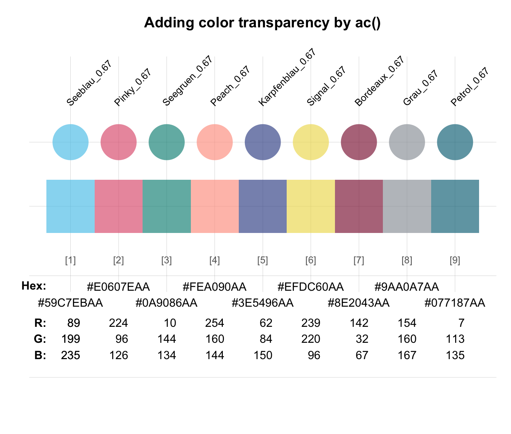
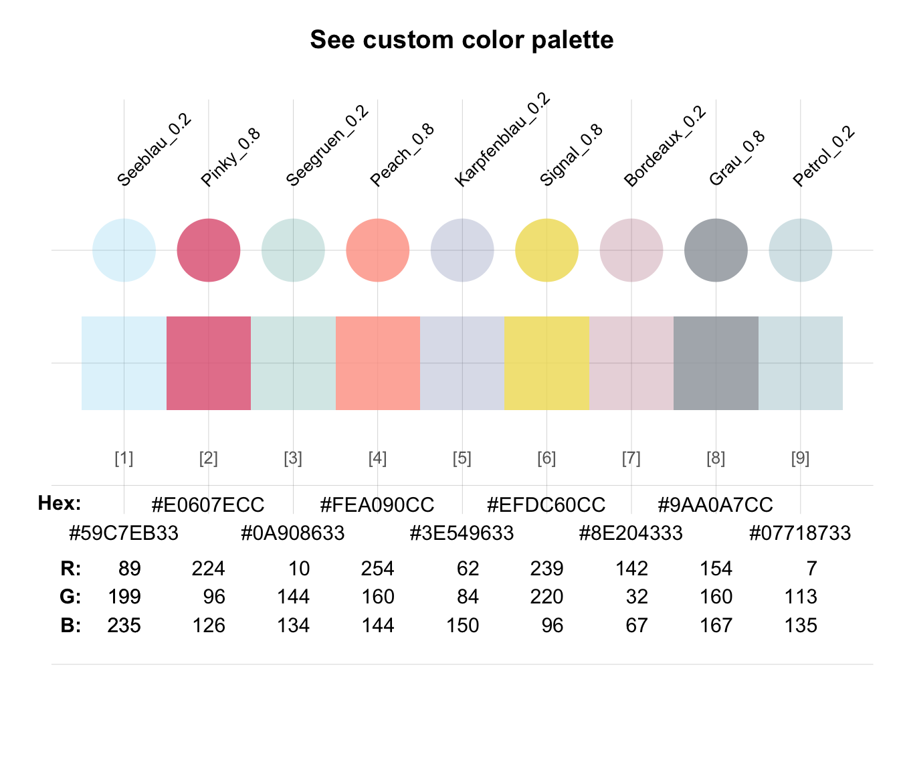

ac adjusts the transparency of a color or color palette col
to an opacity level alpha (in [0, 1]).
Arguments
- col
A (required) color or color palette (as a vector).
- alpha
A factor modifying the opacity alpha (as
alpha.finadjustcolor) to a value in[0, 1]. Default:alpha = .50(i.e., medium opacity).- use_names
A logical value indicating whether color names should be adjusted to include the values of
alpha. Default:use_names = TRUE.
Value
A color vector of the same length as col,
transformed by adjustcolor.
Details
ac is mostly a wrapper for adjustcolor
of the grDevices package, but allows for more flexible
combinations of (multiple) col and alpha values.
The name ac is an abbreviation of "adjust color",
but is also a mnemonic aid for providing "air conditioning".
Examples
ac("black") # using alpha = .5 by default
#> black_0.5
#> "#00000080"
# multiple colors:
cols <- ac(c("black", "gold", "deepskyblue"), alpha = .50)
seecol(cols, main = "Transparent colors")
 # multiple alphas:
blacks <- ac("black", alpha = 5:0/5)
seecol(blacks, main = "One col several alpha values")

bgc <- ac(c("black", "gold"), alpha = 1:6/6)
seecol(bgc, main = "More alpha values than cols")
# multiple alphas:
blacks <- ac("black", alpha = 5:0/5)
seecol(blacks, main = "One col several alpha values")

bgc <- ac(c("black", "gold"), alpha = 1:6/6)
seecol(bgc, main = "More alpha values than cols")
 # Using a color palette:
seecol(ac(pal_unikn_pref, 2/3), main = "Adding color transparency by ac()")

# Color names:
seecol(ac(col = pal_unikn_pref, alpha = c(1/5, 4/5), use_names = TRUE))

seecol(ac(col = pal_unikn_pref, alpha = c(1/5, 4/5), use_names = FALSE))
# Using a color palette:
seecol(ac(pal_unikn_pref, 2/3), main = "Adding color transparency by ac()")

# Color names:
seecol(ac(col = pal_unikn_pref, alpha = c(1/5, 4/5), use_names = TRUE))

seecol(ac(col = pal_unikn_pref, alpha = c(1/5, 4/5), use_names = FALSE))